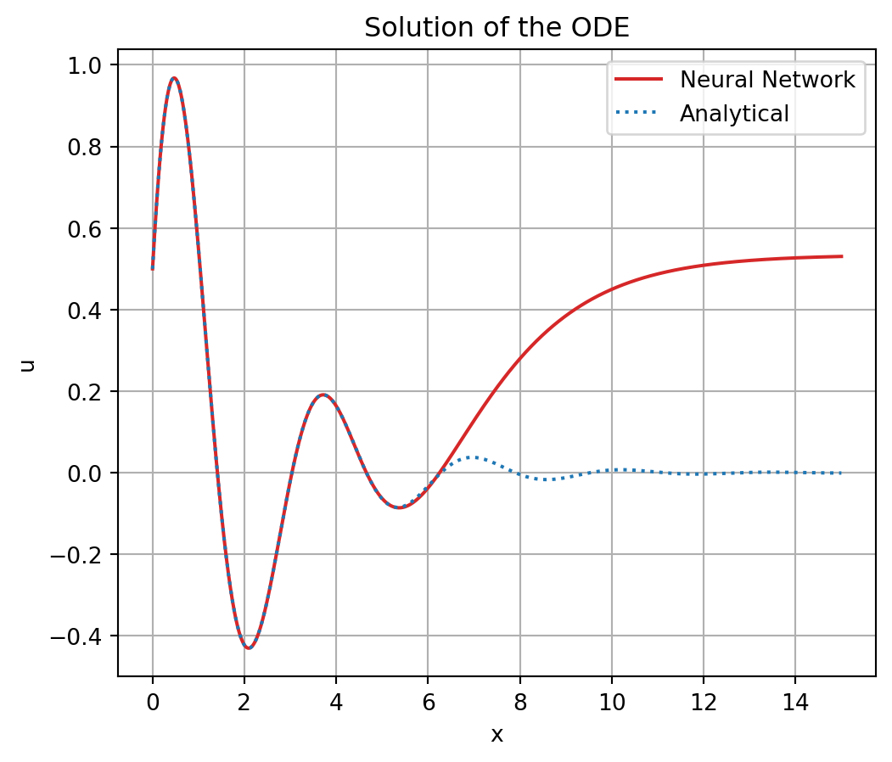
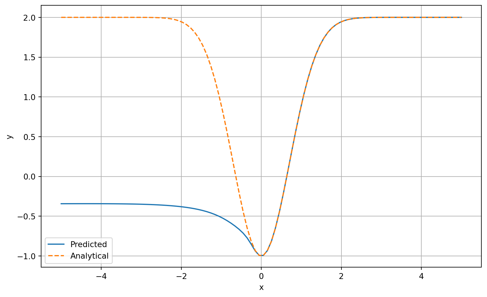

import torch # for constructing, learning, using NNs
import torch.nn as nn
import torch.optim as optim
import matplotlib.pyplot as plt # for visualizationPost titel: ODE via NN
Science
Technology
Post description
% Back up ODE: torch.mean( (dy_dx - (x+y)/x)2 ) + (y[0] + 0.1)2
To Dos:
- ACHTUNG: evtl noch randomness in NN training (diese ausmerzen) UND ODER EINEN ANDEREN SEED VERWENDEN
- nach zweiter LossODE: HIDE code show plots
- construct model, criterion and loss
- training
- visualization with analyticaly solution
Load Packages
Define Neural Network
class Network(nn.Module):
def __init__(self, input_size, hidden_size, output_size):
super(Network, self).__init__()
self.net = nn.Sequential(
nn.Linear(input_size, hidden_size),
nn.Sigmoid(),
nn.Linear(hidden_size, output_size)
)
def forward(self, x):
return self.net(x)First ODE
Define Custom Loss Function
class LossODE(nn.Module):
def __init__(self):
super(LossODE, self).__init__()
def forward(self, model, x):
x = x.clone().detach().requires_grad_(True)
y = model(x)
dy_dx = torch.autograd.grad(
outputs=y,
inputs=x,
grad_outputs=torch.ones_like(y),
create_graph=True
)[0]
d2y_dx2 = torch.autograd.grad(
outputs=dy_dx,
inputs=x,
grad_outputs=torch.ones_like(dy_dx),
create_graph=True)[0]
loss_DE = torch.mean((d2y_dx2 + 1*dy_dx + 4*y)**2)
loss_initial = (y[0] - 0.5)**2 + (dy_dx[0] - 2)**2
loss_total = loss_DE + loss_initial
return loss_totalConstruct model, loss and optimizer
model = Network(input_size=1, hidden_size=10, output_size=1)
criterion = LossODE()
optimizer = optim.Adam(model.parameters(), lr=1e-3)Set x-values
x = torch.linspace(0, 5, 100)[:, None]Training
WICHTIG: Kommentar auch in ANN für ODEs bzgl. epochs & PRINT REPLACE ÜBERNEHMEN
seed = 42
torch.manual_seed(seed)
num_epochs = 10
steps_per_epoch = 3000
for epoch in range(num_epochs):
for step in range(steps_per_epoch):
loss = criterion(model, x)
optimizer.zero_grad()
loss.backward()
optimizer.step()
print(f"Epoch [{epoch+1}/{num_epochs}], Loss: {loss.item():.4f}")Epoch [1/10], Loss: 0.1530Epoch [2/10], Loss: 0.0672Epoch [3/10], Loss: 0.0492Epoch [4/10], Loss: 0.0032Epoch [5/10], Loss: 0.0022Epoch [6/10], Loss: 0.0017Epoch [7/10], Loss: 0.0014Epoch [8/10], Loss: 0.0011Epoch [9/10], Loss: 0.0006Epoch [10/10], Loss: 0.0002Visualize learned and analytical solution
Show code
x = torch.linspace(0, 15, 1000)[:, None]
with torch.no_grad():
y = model(x)
plt.figure(figsize=(8, 5))
plt.plot(x, y, color="C3", label="Neural Network")
plt.plot(x, torch.exp(-0.5*x)*(0.5*torch.cos(x*(15)**0.5/2)+3*((15)**0.5/10)*torch.sin(x*(15)**0.5/2)), color="C0", label="Analytical", linestyle="dotted")
plt.title("Solution of the ODE")
plt.xlabel("x")
plt.ylabel("y")
plt.legend()
plt.grid()
plt.show()
Second ODE
Define Custom Loss Function
class LossODE(nn.Module):
def __init__(self):
super(LossODE, self).__init__()
def forward(self, model, x):
x = x.clone().detach().requires_grad_(True)
y = model(x)
dy_dx = torch.autograd.grad(
outputs=y,
inputs=x,
grad_outputs=torch.ones_like(y),
create_graph=True
)[0]
loss_DE = torch.mean((dy_dx - 2*x*(2-y))**2)
loss_initial = (y[0] + 1)**2
loss_total = loss_DE + loss_initial
return loss_totalConstruct model, loss and optimizer
model = Network(input_size=1, hidden_size=10, output_size=1)
criterion = LossODE()
optimizer = optim.Adam(model.parameters(), lr=1e-3)Set x-values
x = torch.linspace(0, 5, 100)[:, None]Training
seed = 42
torch.manual_seed(seed)
num_epochs = 10
steps_per_epoch = 3000
for epoch in range(num_epochs):
for step in range(steps_per_epoch):
loss = criterion(model, x)
optimizer.zero_grad()
loss.backward()
optimizer.step()
print(f"Epoch [{epoch+1}/{num_epochs}], Loss: {loss.item():.4f}")Epoch [1/10], Loss: 0.3274Epoch [2/10], Loss: 0.0380Epoch [3/10], Loss: 0.0141Epoch [4/10], Loss: 0.0080Epoch [5/10], Loss: 0.0025Epoch [6/10], Loss: 0.0003Epoch [7/10], Loss: 0.0000Epoch [8/10], Loss: 0.0000Epoch [9/10], Loss: 0.0000Epoch [10/10], Loss: 0.0000Visualize learned and analytical solution
Show code
x = torch.linspace(-5, 5, 1000)[:, None]
with torch.no_grad():
y = model(x)
plt.figure(figsize=(8, 5))
plt.plot(x, y, color="C3", label="Neural Network")
plt.plot(x, 2 - 3*torch.exp(-x**2), color="C0" , label="Analytical", linestyle="dotted")
plt.title("Solution of the ODE")
plt.xlabel("x")
plt.ylabel("y")
plt.legend()
plt.grid()
plt.show()